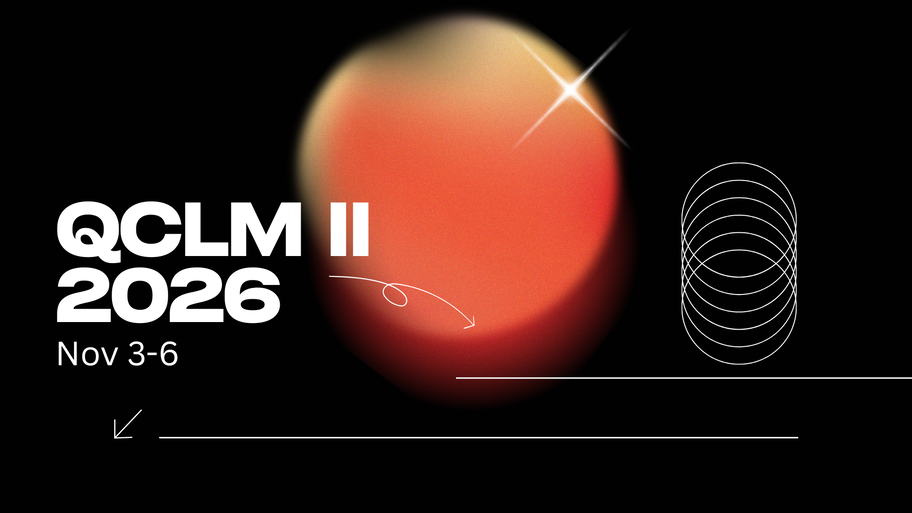
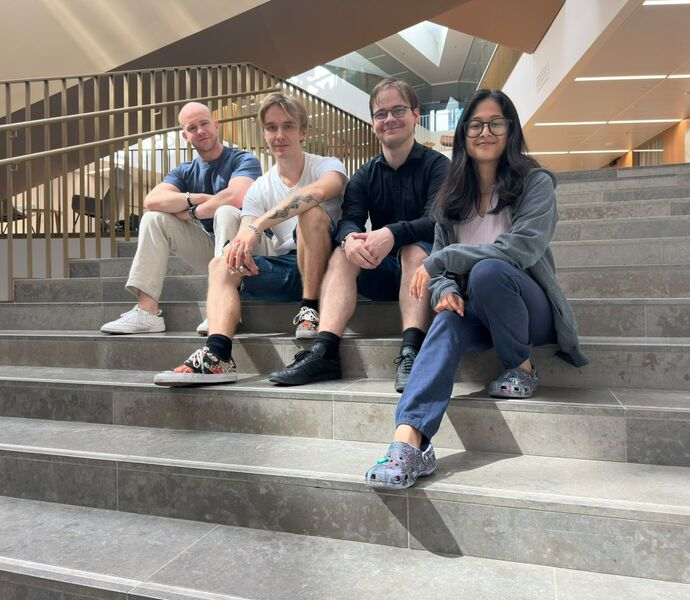

News
-
QCLM II announced for November 2026
The second Quantum Correlated Light and Matter conference will be held at Aalto University's Dipoli building on 3–6 November 2026, organised together with colleagues in Munich and Berlin.

-
Summer 2026 interns
We are pleased to welcome our 2026 summer interns. Left to right in the photo: experimental interns Arjan Boom from Eindhoven University of Technology, working on polariton BEC in metasurfaces with bound states in the continuum, and Lauri Kinnunen from the University of Turku, focusing on high-vacuum optical trapping of large-mass particles; followed by theory interns Jussi Sukanen-Vilkki from Aalto University, studying nonequilibrium BEC via Lindblad-to-Fokker–Planck mappings, and Adrija Chattopadhyay from the Indian Institute of Technology Madras, exploring cavity-controlled chemistry with BEC.

-
Hong-Ou-Mandel interferometry with trapped polariton condensates
Two-particle interference between spatially separated polariton condensates, published in Physical Review B.